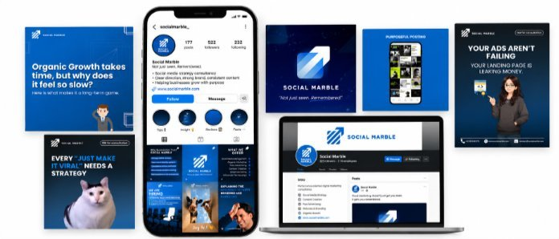
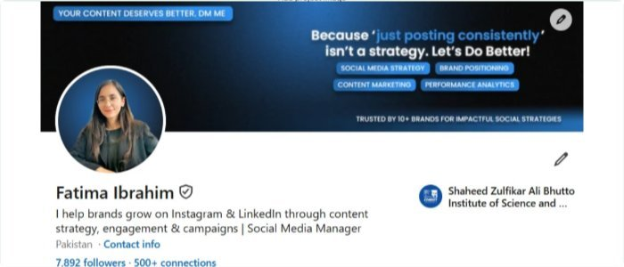

Fatima Ibrahim
I help businesses build a stronger presence on social media through strategy, content, and consistent management.
Thoughtful social media, grounded in your goals
I’m Fatima Ibrahim, a Social Media Strategist and Content Marketer with 3+ years of experience. I help businesses plan, create, and manage content that connects with their audience and supports their goals.
Social Media Strategy
Social Media Management
Content Strategy & Planning
Social Media Content Creation
LinkedIn Marketing
LinkedIn Personal Branding
A few things I worked on:
A mix of social media, content, and personal branding projects. Here’s a look at some of the work I’ve done.

Building a Social Media System
A clear identity that feels like you. Made to connect and stay in mind.

Turning LinkedIn Into a Lead Channel
Building a personal brand through content, networking, engagement, and outreach.

Turning Handmade Products Into Sales
Using social media content and organic marketing to generate product interest and sales.
Turning Handmade Products Into Sales
Kavish by SCINOSA · Social Media Marketing & Product Promotion
Read the full case studyBuild an online presence for handmade wooden products
The goal was to build an online presence for the products, introduce them to a wider audience, and use social media as a channel for organic promotion and sales.
I developed the social media direction and content plan around the products, focusing on how to present the handmade pieces and communicate their value to potential customers.
I created social media content for the products, including visuals and promotional posts designed to showcase the wooden frames and encourage people to enquire about them.
Who is Fatima Ibrahim?
I’m a Social Media Strategist & Content Marketer who likes figuring out what makes content actually work
3+ years of learning, creating & figuring things out
I’ve worked on different social media projects, which has given me experience across strategy, content, publishing, organic marketing, community management, LinkedIn marketing, and client communication. Some projects have been straightforward. Others have required a lot of figuring things out along the way. And honestly, that’s one of the things I like about marketing — there’s rarely one formula that works for everyone.
Things I’m good at
Have a project in mind? Let’s talk.
Looking for someone to help with your social media or content? Tell me a little about what you’re working on, what you need help with, and where you’re stuck. I’ll get back to you and we can figure out if I’m the right fit.
fatimaibrahim660087@gmail.com
https://www.linkedin.com/in/fatima-ibrahimm/
Not sure what you need yet?
That’s completely fine. We can have a quick chat, talk through what you’re looking for, and figure out the next step.